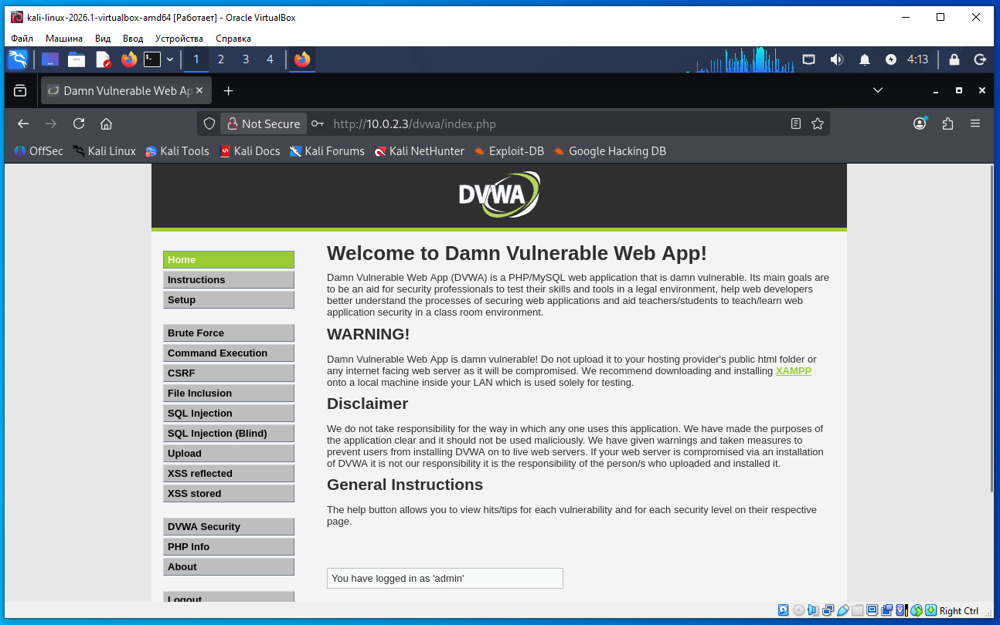

Предполагается что все действия выполняются на виртуальных машинах VirtualBox.
Необходимо определить IP с машиной Metasploitable 2. Для этого сначала определим наш IP и маску подсети, для этого дадим команду в терминале Kali:
ifconfig
В результатах вывода команды выше, можно увидеть такую строку:
inet 10.0.2.4 netmask 255.255.255.0
То есть наш IP 10.0.2.4 а диапазон IP адресов нашей сети 10.0.2.0/24 (это обяснялось ранее в предыдущих статьях).
Для обнаружения других компьютеров в сети и в том числе нашей удаленной машины Metasploitable 2, дадим команду в терминале Kali:
sudo netdiscover -r 10.0.2.0/24
В выводе команды:
10.0.2.2 08:00:27:3a:17:ed 1 60 PCS Systemtechnik GmbH 10.0.2.3 08:00:27:f1:18:5a 1 60 PCS Systemtechnik GmbH
10.0.2.2 - это виртуальный роутер, который управляет нашей сетью.
10.0.2.3 - это наша машина (по логике) с Metasploitable 2.
Проверим связь между нашей Kali и удаленной ВМ Metasploitable 2, дадим команду:
ping 10.0.2.3
Если сеть в VirtualBox настроена правильно, видим пинг идет, связь есть.
На Kali открываем веб- браузер Mozilla Firefox и в строку адреса вводим IP удаленной Metasploitable 2. После открытия страницы, нажимаем ссылку на странице DVWA.


В адресной строке браузера появился адрес (после нажатия ссылки DVWA):
http://10.0.2.3/dvwa/login.php
То есть после открытия веб- браузера на эту страницу DVWA можно было бы перейти сразу по ссылке:
http://10.0.2.3/dvwa/
И откроется та же страница DVWA входа.
На форме входа в DVWA логин/пароль следующие: admin/password.
После ввода логина/пароля в форму входа DVWA видим следующую страницу:

Это и есть наше веб- приложение DVWA которое мы будем взламывать для теста.
Кроме того, DVWA можно отдельно загрузить из интернета в виде файла DVWA-1.0.7.iso со страницы https://www.vulnhub.com/entry/damn-vulnerable-web-application-dvwa-107,43/. Далее этот ISO можно подключить к VirtualBox и работать с ним.
Но так же как видим DVWA (Damn Vulnerable Web Application) уже встроен в Metasploitable 2. Это одна из причин, почему Metasploitable 2 так популярен для обучения пентесту: в нем уже установлено несколько специально уязвимых приложений.
Таким образом у вас есть выбор- либо пользоваться DVWA установленным на Metasploitable 2, либо ISO образ DVWA загрузить из интернет.
Мы будем использовать DVWA установленным на Metasploitable 2.